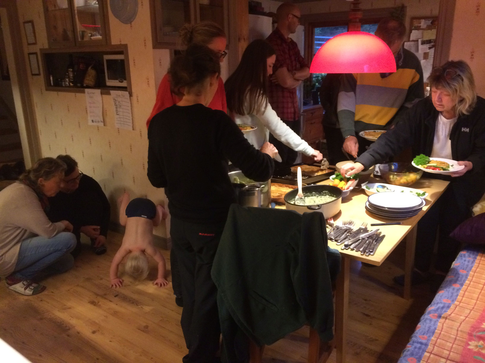
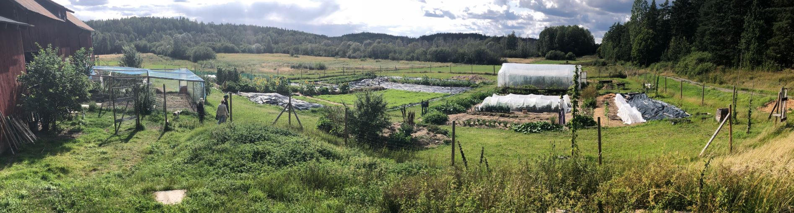
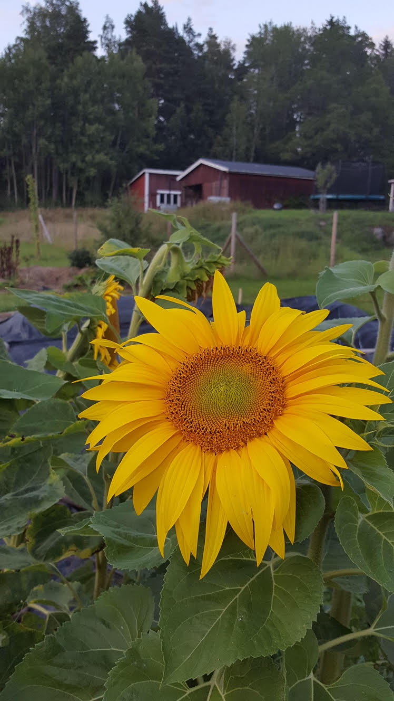

Änggärdet är en gård i Skebokvarn, Flens kommun, som sedan 2011 ägs och drivs av en ekonomisk förening. Gården är på 22 hektar som består av odlingsmark, skog och våtmark. På marken finns bostadshus, lada med stall, verkstad och vagnslider. Föreningen har knappt 20 medlemmar. Med barn, grannar och andra gäster betyder det att ett femtiotal personer i alla åldrar deltar i gemenskapen. Ungefär hälften av medlemmarna har flyttat till gården eller dess närhet, men de flesta bor kvar på hemorten och har gården som fritidshus. På gården bedrivs småskalig odling utifrån ekologiska principer, vi har även frigående höns.
Syftet med gårdsgemenskapen är att tillsammans utveckla en hållbar livsstil och att bidra till omställningen till ett hållbart och resilient samhälle. Änggärdet vill skapa livskvalitet som är mindre konsumtionsbaserad och mer baserad på skapande och gemenskap. Det finns möjlighet för medlemmarna att bygga egna hus och att ha egna odlingar på gården, och ett privat parhus har byggts. Medlemmarnas största fokus ligger dock på de gemensamma odlingarna, skötseln av gården och skogen och andra gemensamma projekt. Arbetet utförs till stor del på arbetshelger och sommarveckor. Alla medlemmar är med i någon av de fyra arbetsgrupper - Odling, Bygg- och underhåll, Sociala frågor, Mark och infrastruktur - som organiserar och planerar verksamheten på gården. 
Den sociala aspekten av hållbarhet är en viktig del av Änggärdet och mycket tid läggs på att skapa en trygg grupp som både kan ta sig an svårigheter och ha roligt tillsammans. Vi arbetar mycket med att skapa en gemenskap där alla kan uttrycka sin mening. Alla beslut fattas gemensamt – större beslut fattas på medlemsmöten, mindre beslut av arbetsgrupperna eller av styrelsen. Besluten fattas oftast med konsensus och mer sällan genom omröstning. Varje år har Änggärdet tre medlemshelger. Då diskuterar vi gårdens utveckling och viktiga frågor samt arbetar på olika sätt med gruppsammanhållningen. Lekar, gemensamma måltider och fester är också sätt att utveckla den sociala sammanhållningen.
Änggärdet vill vara en öppen gemenskap som man kan delta i utan att vara medlem i föreningen. Vi ordnar öppna besöksdagar och kurser och vissa arbetshelger är öppna för den som vill vara med. Vi har också aktiv samverkan med bybor och föreningar i Skebokvarn.
Änggärdet har genom åren anordnat olika kurser i samarbete med kunniga personer bl.a: dagkollo för barn i samarbete med Flens kommun, bygga med naturliga material, biodling, naturnära skogsbruk, Nonviolent Communication, Permakultur-introduktion, lokal ekonomi, Ympning och svampodling.
Änggärdet utvecklas ständigt. Det är medlemmarnas engagemang och intressen som påverkar hur Änggärdet kommer utformas. Redan idag är det ett projekt som stärker banden mellan stad och landsbygd och ett försök att leva mer hållbart. Är du nyfiken på Änggärdet kan du hitta oss på Facebook där lägger vi ut vad som händer på gården och datum för öppna arbetshelger. 
 Mycket tyder på att vi är på väg in i en framtid präglad av ökad konkurrens om energi och andra resurser, liksom ökad ekonomisk instabilitet och ett förändrat klimat. I ljuset av detta fungerar Änggärdet både som en beredskap för att kunna anpassa oss till en värld i förändring och ett sätt att minska våra anspråk på såväl jordens som andra människors resurser.
Kontaktperson Kerstin Åberg tel +46704562842 Kerstin@medhjartat.se